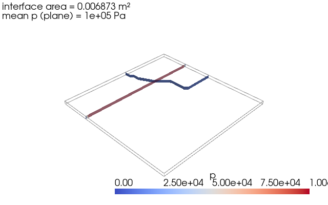

Note
Go to the end to download the full example code.
Surface monitors alongside volume ones¶
The post-processor doesn’t care whether the reducer feeds on volume cells, a
sampled plane, or an iso-surface — it routes whatever the function returns
through the same write step. This tutorial adds two surface-derived
@Table outputs to the class we’ve been building:
interface area — the area of the
alpha.water = 0.5iso-surface, a proxy for the gas–liquid interface,plane-averaged pressure — mean
pon a horizontal cutting plane.
Both use the same builders documented in pyOFTools.builders.
Clone, mesh, set fields¶
import subprocess
import numpy as np # noqa: F401 — imported early to dodge SIGFPE
import pyOFTools.patch_pybfoam # noqa: F401
from pyOFTools import clone_example
CASE = clone_example("damBreak")
from pybFoam import Time, argList, dictionary, fvMesh, volScalarField
from pybFoam.meshing import generate_blockmesh
time = Time(argList([str(CASE), "-case", str(CASE)]))
generate_blockmesh(time, dictionary.read(str(CASE / "system" / "blockMeshDict")))
subprocess.run(
["pyoftools", "setFields", "system/setFields.py"],
cwd=CASE,
check=True,
capture_output=True,
text=True,
)
mesh = fvMesh(time)
volScalarField.read_field(mesh, "alpha.water")
volScalarField.read_field(mesh, "p")
<pybFoam.pybFoam_core.volScalarField object at 0x7f46e8efb310>
Two new builders¶
iso_surface(mesh, field, value) returns a workflow carrying just the
iso-surface geometry — no field on it yet. Pipe into:
area()to write face-area magnitudes onto the surface, thenSumto total them. That’s the “how much interface” number.sample(mesh, name)to interpolate a volume field onto the surface, then any reducer.
plane(mesh, point, normal) works the same way. We use it with
sample + Mean for an area-weighted-free average pressure on a slice.
from pyOFTools.aggregators import Mean, Sum, VolIntegrate
from pyOFTools.builders import area, field, iso_surface, plane, sample
from pyOFTools.postprocessor import PostProcessorBase
postProcess = PostProcessorBase(base_path=str(CASE) + "/postProcessing/")
@postProcess.Table("water_volume.csv")
def water_volume(m):
return field(m, "alpha.water") | VolIntegrate(name="water_volume")
@postProcess.Table("interface_area.csv")
def interface_area(m):
return iso_surface(m, "alpha.water", 0.5) | area() | Sum(name="interface_area")
@postProcess.Table("mean_p_midplane.csv")
def mean_p_midplane(m):
# Horizontal plane at y = 0.146 m, halfway up the initial water column.
return (
plane(m, point=(0.0, 0.146, 0.0), normal=(0.0, 1.0, 0.0))
| sample(m, "p")
| Mean(name="mean_p_midplane")
)
Evaluate at the current time step¶
Same as before — we call execute / write on the initial fields
instead of running a solver. Run live with the solver, then plot wires
this class into controlDict and runs compressibleInterFoam so
OpenFOAM does the calls for us.
runner = postProcess(mesh)
runner.execute()
runner.write()
runner.end()
import pandas as pd
results = {}
for name in ("water_volume.csv", "interface_area.csv", "mean_p_midplane.csv"):
print(f"--- {name} ---")
text = (CASE / "postProcessing" / name).read_text()
print(text)
df = pd.read_csv(CASE / "postProcessing" / name)
results[name] = df.iloc[-1]
--- water_volume.csv ---
time,water_volume
0.0,0.0008404216050726664
--- interface_area.csv ---
time,interface_area
0.0,0.006872853348567688
--- mean_p_midplane.csv ---
time,mean_p_midplane
0.0,100000.0
Visualise the surfaces¶
The two surface monitors are easier to read as 3-D geometry: the
alpha = 0.5 iso-surface (the gas–liquid interface) and the horizontal
cutting plane at y = 0.146 m (where we average pressure). pyvista
extracts them from the same case and lets us draw them in one scene with
the mesh outline for context.
import pyvista as pv
from pybFoam import pyvista_read
reader = pyvista_read(CASE, time=0.0)
internal = reader.read()["internalMesh"]
interface = internal.contour(isosurfaces=[0.5], scalars="alpha.water")
midplane = internal.slice(normal="y", origin=(0.292, 0.146, 0.0075))
plotter = pv.Plotter(window_size=(640, 400), off_screen=True)
plotter.add_mesh(internal.outline(), color="gray")
plotter.add_mesh(interface, color="royalblue", opacity=0.85, label="α = 0.5")
plotter.add_mesh(midplane, scalars="p", cmap="coolwarm", opacity=0.65)
plotter.add_text(
f"interface area = {results['interface_area.csv']['interface_area']:.4g} m²\n"
f"mean p (plane) = {results['mean_p_midplane.csv']['mean_p_midplane']:.4g} Pa",
position="upper_left",
font_size=10,
)
plotter.view_isometric()
plotter.show()

Takeaways¶
iso_surfaceandplanegive you aSurfaceDataSet; pipe intoarea()(face-area magnitudes) orsample(mesh, name)(interpolated volume field) before any reducer.Once the dataset is populated, the same reducers work everywhere —
Mean/Sum/Min/Maxon the surface,VolIntegrateon the volume. One vocabulary, many geometries.Box/Sphereselectors andDirectionalbinners apply to surface datasets too (they only readpositions).
Next: Run live with the solver, then plot — wire this class into the solver, run a real time window, and plot the resulting time-series.
Total running time of the script: (0 minutes 0.929 seconds)